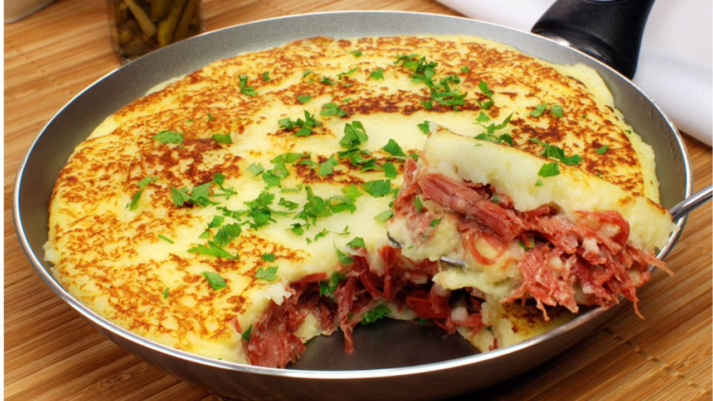
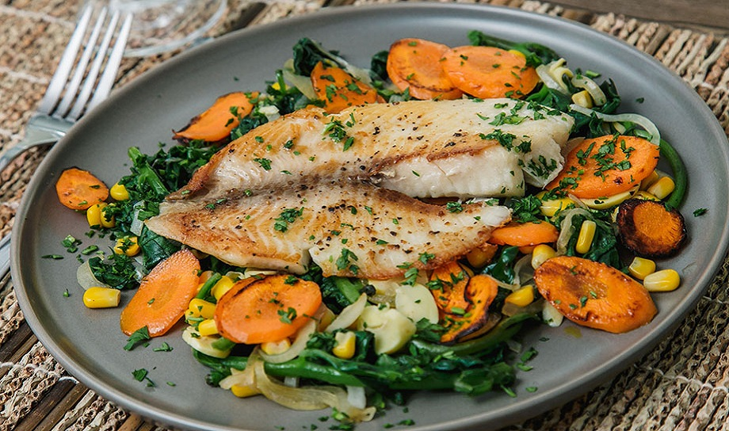

Almoço
O almoço é a refeição principal do dia, onde reunimos energia para enfrentar as atividades diárias. Aqui você encontrará uma variedade de receitas deliciosas e nutritivas para tornar seu almoço especial. Explore as opções e descubra novas ideias para suas refeições.

Strogonoff de Frango
Essa é aquela receita que não tem erro e agrada todo mundo, desde as crianças até os adultos.
- Ingredientes: Peito de frango em cubos, cebola picada, molho de tomate, mostarda, ketchup, creme de leite e batata palha para acompanhar.
- Preparo: Refogue o frango com temperos até dourar. Adicione o molho, a mostarda e o ketchup. Por fim, desligue o fogo e misture o creme de leite para dar a cremosidade perfeita.

Escondidinho de Carne Seca
Um prato reconfortante que traz o contraste delicioso entre o purê cremoso e o salgadinho da carne.
- Ingredientes: Mandioca (aipim) cozida e amassada, leite, manteiga, carne seca desfiada e dessalgada, e queijo coalho para gratinar.
- Preparo: Faça um purê liso com a mandioca. Refogue a carne seca com cebola e cheiro-verde. Em uma travessa, faça uma camada de purê, uma de carne e cubra com o restante do purê e queijo. Leve ao forno até dourar.

Filé de Peixe Grelhado com Legumes
Para quem busca um almoço mais saudável e rápido, mas sem abrir mão do tempero.
- Ingredientes: Filés de tilápia ou pescada, limão, azeite, brócolis, cenoura e batata doce em rodelas.
- Preparo: Tempere o peixe com sal e limão. Grelhe no azeite até ficar dourado. Cozinhe os legumes no vapor e finalize-os na mesma frigideira do peixe com um pouco de alho para pegar o sabor.